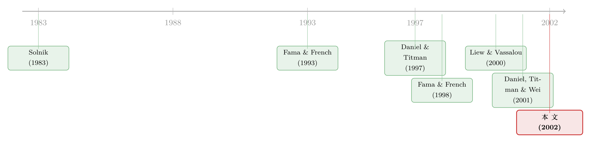

Fama-French 因子是「全球」的，还是「各回各家」的？
本文读的是 Griffin (2002, Review of Financial Studies)：把 Fama-French 三因子模型搬到国际市场后，到底该用一套「全球因子」给所有国家定价，还是给每个国家配一套「本土因子」？作者用美、日、英、加四国的组合与个股做了一次彻底的对账，结论干脆得有点扫兴——本土因子完胜全球因子。给美股算资本成本，用错模型，每年能差出 8.41%。
1 一个看似不起眼、却价值 8.41% 的选择
先讲一个会让 CFO 睡不着的数字。
假设你要给一只美国股票算资本成本（cost of capital）。你打开 Fama-French 三因子模型，照着公式把贝塔、规模载荷、价值载荷代进去——但在动手之前，你得先做一个选择：用美国本土的三个因子，还是用一套全球的三个因子？
听起来像个无关痛痒的技术细节。可 Griffin 在文章一开头就甩出一个数：对美股而言，本土三因子模型和全球三因子模型给出的预期收益估计，平均每年相差 8.41%。八个百分点是什么概念？这几乎是股权风险溢价本身的量级。换句话说，模型选错了，你的资本预算、绩效评估、风险分析全得跟着错位。
于是一个本来藏在脚注里的问题，被推到了台前：Fama-French 因子，到底是全球的，还是各国特定的？
2 故事要从一个「整不整合」的赌注说起
要理解这个问题为什么不只是「跑两个回归比一比」那么简单，得先回到国际资产定价理论的一条铁律。
在一个有效且一体化 (integrated) 的国际资本市场里，应该只存在一套风险因子，能同时解释所有国家的预期收益。道理很直白：如果资本可以自由跨境流动，那么同一种风险在东京和纽约就该卖同一个价钱；不可能在日本是一种风险、在美国又是另一种。所以「全球因子模型」背后其实压着一个维持假设（maintained hypothesis）——市场是整合的。
Fama and French (1998) 正是顺着这条理路做的。他们构造了一个带「全球账面市值比因子 (WHML)」的世界两因子模型，发现它比世界 CAPM 给出的截距更接近零、调整 \(R^2\) 更高。结论似乎很美好：全球价值因子是有用的。
但这里有一处微妙的、也是 Griffin 一眼看穿的漏洞——
Fama and French (1998) 从来没有把世界因子模型和「纯本土」模型放在一起比过。
这就埋下了全文的张力。因为世界因子说到底，是各国因子的加权平均。它解释力强，会不会只是因为它内部本来就装着各国本土的成分？真正干活的，也许从头到尾都是本土因子，全球因子不过是搭了个便车。
3 把世界因子拆开来看
这正是 Griffin 设计的核心一招：把世界因子拆成本土与外国两块，让数据自己说话。
先看三个模型。世界因子模型（world model）假设全世界只有一套因子：
$$ r_{it} = \alpha_i + b_i\,WMRF_t + s_i\,WSMB_t + h_i\,WHML_t + \epsilon_{it} $$
其中 \(r_{it}\) 是资产 \(i\) 以美元计价、超出本国无风险利率的收益，\(WMRF\)、\(WSMB\)、\(WHML\) 分别是世界的市场、规模 (small minus big)、价值 (high minus low) 因子。
关键在于，这些世界因子本身就是各国成分按市值加权的平均。以市场因子为例：
看清这个结构，后面就顺了。既然世界因子 $=$ 本土成分 $+$ 外国成分，那就干脆放开手，让本土成分和外国成分各自带一个系数，这就是国际因子模型（international model）：
$$ \begin{aligned} r_{it} = \alpha_i &+ b_{Di}\,(w_{Dt-1}DMRF_t) + s_{Di}\,(w_{Dt-1}DSMB_t) + h_{Di}\,(w_{Dt-1}DHML_t) \\ &+ b_{Fi}\,(w_{Ft-1}FMRF_t) + s_{Fi}\,(w_{Ft-1}FSMB_t) + h_{Fi}\,(w_{Ft-1}FHML_t) + \epsilon_i \end{aligned} $$
这个六因子模型把世界模型「解剖」成了本土三块与外国三块。它的妙处在于嵌套：如果外国因子根本无关紧要——也就是 \(b_{Fi}=s_{Fi}=h_{Fi}=0\)——那它就坍缩回一个纯本土三因子模型：
$$ r_{it} = \alpha_i + b_{Di}\,(w_{Dt-1}DMRF_t) + s_{Di}\,(w_{Dt-1}DSMB_t) + h_{Di}\,(w_{Dt-1}DHML_t) + \epsilon_i $$
于是三个模型构成了一条清晰的逻辑链：世界模型（强行用一套全球因子）⊂ 比较对象是 本土模型（只用本国因子）；而 国际模型（本土+外国都放进去）则是裁判——它让数据来回答：把外国因子加进来，到底有没有用？
评判标准有两条。第一，资产定价模型预测所有截距 \(\alpha_i\) 应联合等于零，所以截距绝对值越小，定价误差越小。第二，模型不预测 \(R^2\) 的大小，但有用的因子应该带来更高的 \(R^2\)。Griffin 就用这两把尺子，逐个国家、逐种排序方式地量。
这里还有一个常被忽略却很要命的细节：因子之间的相关性。Griffin 在 Table 1 里发现，各国的 SMB、HML 因子跨国相关性出奇地低——比如日本 HML 和美国 HML 几乎不相关。这一方面呼应了 Hawawini and Keim (1997) 的发现；另一方面也带来一个实证上的便利：本土因子和外国因子之间不存在严重的共线性，可以心安理得地塞进同一个回归。但它背后的含义更耐人寻味——如果各国的规模和价值风险真是同一组底层状态变量，且市场又整合，这些溢价本不该如此「各走各路」。
4 数据：四个「应该整合」的市场
既然模型是和「市场整合」这个维持假设一起被检验的，Griffin 就刻意挑那些最可能整合的市场。
大量实证（尤其是 1980 年之后）认为美国与加拿大、英国、日本之间是整合的。于是样本锁定为 1981 年 1 月至 1995 年 12 月的月度收益，观测单位是组合或个股，收益一律以美元计价、扣除本国无风险利率。到 1995 年，样本里有日本 1521 家、英国 1234 家、加拿大 631 家公司，非美国公司共 3386 家——这么大的横截面，足以支撑个股层面的检验。
为什么要用个股？因为 Ferson, Sarkissian, and Simin (1999) 和 Berk (2000) 都警告过：用「按某个特征排序得到的组合」来构造因子，会在样本内人为制造出那个特征的证据。所以 Griffin 既做传统的按 BE/ME、按规模排序的组合，也做个股回归——两者结论一致，才算稳。
5 反转：全球因子，其实是搭了便车
现在来看那两把尺子量出了什么。
第一回合，高低账面市值比组合。 跨四国的高、低 BE/ME 组合，世界三因子模型的平均截距绝对值是 0.25，本土三因子模型是 0.22——本土略胜。但真正拉开差距的是 \(R^2\)：本土模型的平均调整 \(R^2\) 高达 0.898，世界模型只有 0.530。一个解释了近九成的时序变动，另一个只解释了一半出头。
Griffin 在这里特意复现了 Fama and French (1998) 的结果：是的，加入世界 HML 因子，确实让截距更接近零、\(R^2\) 更高，比世界 CAPM 强。但他同时发现，本土两因子模型（本国 HML + MRF）的截距更低、\(R^2\) 更高，比世界两因子模型还要好。 这一刀下去，Fama-French (1998) 那个「全球价值因子有用」的结论就被重新定性了：它有用，但本土版本更有用。
第二回合，把外国因子也加进来。 国际六因子模型的平均定价误差是 0.24，竟然比纯本土模型的 0.22 还高了 0.02；调整 \(R^2\) 是 0.904，相比本土的 0.898 只高了千分之六。也就是说，多塞进去三个外国因子，解释力的提升小到几乎可以忽略，反而把截距推得更大——这恰恰是模型设定走偏的信号。
第三回合，25 个规模×价值组合。 这一组横截面差异更大，更能区分模型。结果同一个方向：本土模型的调整 \(R^2\) 普遍在 0.80 以上（如美国 0.804、日本 0.809、英国 0.822），而世界模型只有 0.30–0.57（美国 0.513、英国 0.387、加拿大仅 0.301）。国际模型相比本土模型几乎没有改善（美国 0.807 vs 0.804）。
到这里，全文的反转已经完成：世界因子之所以看起来有解释力，正是因为它的肚子里装着本土成分；一旦把本土成分单拎出来，外国成分的边际贡献就所剩无几。 个股回归和样本外检验都指向同一个结论——加入外国因子带来的，是「统计上显著、经济上微不足道」的提升，且本土模型的样本内、样本外定价误差都更小。
一句话：Fama-French 因子是各国特定的，不是全球的。 把三因子模型扩展到国际语境，没有好处。
6 文献脉络
这条线要从国际资产定价的理论根基讲起。Solnik (1983) 的国际套利定价理论指出，当用外币计价时，无风险利率的随机成分恰好等于汇率变动——这正是 Griffin 把外国收益换算成「超出本国无风险利率的美元收益」的理论依据，借此剔除系统性汇率冲击的干扰。
接着，Fama and French (1993) 在美国本土立起了三因子模型这块基石：市场、规模、价值。它的解释力之强、应用之广，几乎成了实证资产定价的默认语言。
然后，一个自然的问题是：这三个因子是「风险」，还是别的什么？Daniel and Titman (1997) 给出尖锐的反驳——是特征 (characteristics) 而非因子载荷在解释收益。这场争论后来被搬到国际舞台：Daniel, Titman, and Wei (2001) 在日本数据里继续力挺「特征派」，而 Liew and Vassalou (2000) 则反过来论证 Fama-French 因子能预测多国的经济增长，像是真的风险因子。
但真正关键的一步，是 Fama and French (1998) 把模型推向全球，并声称世界价值因子有用。Griffin (2002) 站的正是这个位置：他不去纠缠「是风险还是特征」，而是退一步问一个更基础的问题——就算它是因子，这因子的「单位」是国家，还是世界？ 答案是国家。

（关于 Fama-French 因子在国际市场的表现，本博客还讨论过另一篇经典文献，参见《全世界都有「价值」和「动量」，只有日本是个例外》；关于这些因子究竟是不是「风险」，可参见《会「看天」的 beta：当风险收编了价值与规模，动量却躲进了商业周期》。）
7 评论与延伸（Q&A + 研究方向）
(a) 几个可能的疑问
Q：本土因子赢，会不会只是因为本土因子和本土组合是「同源构造」，天然就该拟合得好？
这正是 Ferson-Sarkissian-Simin 和 Berk 警告的偏误，也是 Griffin 最在意的一点。他的应对是双管齐下：既用按特征排序的组合，也用个股回归——个股不经过排序构造，能消除这种机械拟合。两者结论一致，才让「本土胜出」站得住。不过严格说，组合层面的 \(R^2\) 差距里仍可能含有同源成分，所以更该看个股结果和样本外定价误差。
Q：8.41% 的差异是不是被「美元计价 + 汇率」放大了？
部分是定价模型的实质差异，但 Griffin 沿用 Solnik (1983) 的处理，把每国收益表示成「超出本国无风险利率的美元收益」，正是为了压低系统性汇率冲击的影响。所以这 8.41% 主要反映的是本土与全球因子载荷/溢价的真实差别，而非纯粹的汇率噪声。
Q：结论是不是只对「整合市场」成立，反而自相矛盾？
有这层张力。模型是和「市场整合」这个维持假设联合检验的。Griffin 故意挑了美、日、英、加这几个公认（尤其 1980 后）整合的市场——按理说，越整合，全球因子越该奏效。结果连在这些市场里全球因子都输了，反而让「本土因子更优」的结论更强：在最有利于全球模型的赛场上，它依然落败。
Q：这是不是说 Fama and French (1998) 错了？
不算错，是「不完整」。Griffin 完整复现了他们的结果：世界 HML 确实优于世界 CAPM。问题在于 FF(1998) 漏掉了和纯本土模型的对照。补上这一格之后才发现，世界因子的解释力很大程度上是本土成分贡献的——全球因子搭了便车。
Q：低跨国相关性意味着什么？
Table 1 显示各国 SMB、HML 跨国相关性很低。如果规模和价值风险在各国是同一组底层状态变量、且市场整合，这些溢价本该高度相关。它们「各走各路」这件事本身，就是对「单一全球因子」的一个反证，也解释了为什么把外国因子加进来帮不上忙。
Q：对今天的从业者，最硬的 takeaway 是什么？
算资本成本、做绩效评估、跨国比较风险时，按国家用本土三因子模型，别用全球版本。多加外国因子是「统计显著、经济无谓」，还会恶化样本外定价。
(b) 几个可能的研究问题与提案
1. 公司债市场里的「本土 vs 全球」因子之争。
【经济故事】股票市场的答案是「本土赢」，但公司债的定价更依赖全球性的信用周期、流动性冲击与无风险利率曲线。信用利差因子到底是各国特定的，还是更接近全球？这关系到跨国债券组合的风险归因和资本成本。 【可行性】中。需要多国公司债的成交数据（如 TRACE、欧洲的 ICMA/iBoxx 数据），按 Griffin 的「本土/世界/国际」三模型框架照搬即可。难点在于公司债流动性差、横截面薄，个股级别的稳健性检验不易复制。
2. 外资持有比例如何改变一国因子的「全球化程度」。
【经济故事】Griffin 用的是 1981–1995 的样本，那时跨境资本流动远不如今天。一个自然的延伸：随着外资持有比例上升，一国市场是否变得更「全球定价」、本土因子的相对优势是否被侵蚀？这把因子结构和市场一体化的动态联系起来。 【可行性】中高。可用各国外资持有比例（如 IMF CPIS、各国央行数据）作为时变的「一体化程度」代理，在滚动窗口里比较本土与全球模型的相对表现。识别上可借助一些资本账户开放的准自然实验。
3. 把检验从「时序 \(R^2\)」推向「样本外定价误差」的稳健性。
【经济故事】Griffin 已做了样本外比较，但主要落在截距与 \(R^2\)。后续可以系统地用样本外的均方定价误差、GRS 统计量在多个子期上对账，看「本土胜出」是否在不同波动率体制（如危机期 vs 平静期）里都成立。 【可行性】高。纯方法论延伸，数据需求与原文相同，主要是计算量。是个 doable 的复制+扩展型项目。
4. 「特征 vs 因子」之争与「本土 vs 全球」之争的交叉。
【经济故事】Daniel-Titman 说是特征，Griffin 说因子的单位是国家。把两者叠起来问：在国际数据里，是「本土特征」还是「本土因子载荷」在解释收益？这能同时回应两条争论线。 【可行性】中。需要 Daniel-Titman 式的「特征匹配组合」构造，在多国实现并不轻松，且对数据质量敏感，但思路清晰、识别策略成熟。
8 我的判断
Griffin 这篇文章的贡献，不在于发明了什么新方法，而在于补上了一格别人都默认跳过的对照。他把世界因子拆成本土与外国成分这一招，干净、嵌套、可证伪——让「全球因子有用」这个看似稳固的结论，在一个简单的分解面前现了原形。这种「退一步问更基础的问题」的研究品味，比堆砌新因子更难得。
对识别，我有两点保留。其一，结论与「市场整合」这个维持假设捆绑：作者把它转化成了论证优势（在最有利于全球模型的市场里全球模型仍败），但严格说，我们无法把「因子是本土的」和「这些市场其实没那么整合」完全分开。其二，样本停在 1995 年，正处在全球化加速的前夜——今天外资持有、跨境 ETF、被动资金的版图已大不相同，本土因子的相对优势是否依旧，是个真正的开放问题。
我最想看到的后续，是把这套「本土/世界/国际」三模型框架搬到公司债与信用市场，并引入时变的外资持有比例作为一体化程度的标尺——去看一个市场是如何、以及在多大程度上，从「各回各家」一步步走向「全球定价」的。
参考文献
- Daniel, K., and S. Titman (1997). Evidence on the Characteristics of Cross-Sectional Variation in Stock Returns. Journal of Finance 52(1), 1–33.
- Daniel, K., S. Titman, and J. Wei (2001). Explaining the Cross-Section of Stock Returns in Japan: Factors or Characteristics? Journal of Finance 56(2), 743–766.
- Fama, E. F., and K. R. French (1993). Common Risk Factors in the Returns on Stocks and Bonds. Journal of Financial Economics 33(1), 3–56.
- Fama, E. F., and K. R. French (1998). Value versus Growth: The International Evidence. Journal of Finance 53(6), 1975–1999.
- Ferson, W. E., S. Sarkissian, and T. Simin (1999). The Alpha Factor Asset Pricing Model: A Parable. Journal of Financial Markets 2(1), 49–68.
- Griffin, J. M. (2002). Are the Fama and French Factors Global or Country Specific? Review of Financial Studies 15(3), 783–803.
- Hawawini, G., and D. B. Keim (1997). The Cross Section of Common Stock Returns: A Review of the Evidence and Some New Findings. Working paper, University of Pennsylvania.
- Liew, J., and M. Vassalou (2000). Can Book-to-Market, Size and Momentum be Risk Factors that Predict Economic Growth? Journal of Financial Economics 57(2), 221–245.
- Solnik, B. (1983). International Arbitrage Pricing Theory. Journal of Finance 38(2), 449–457.